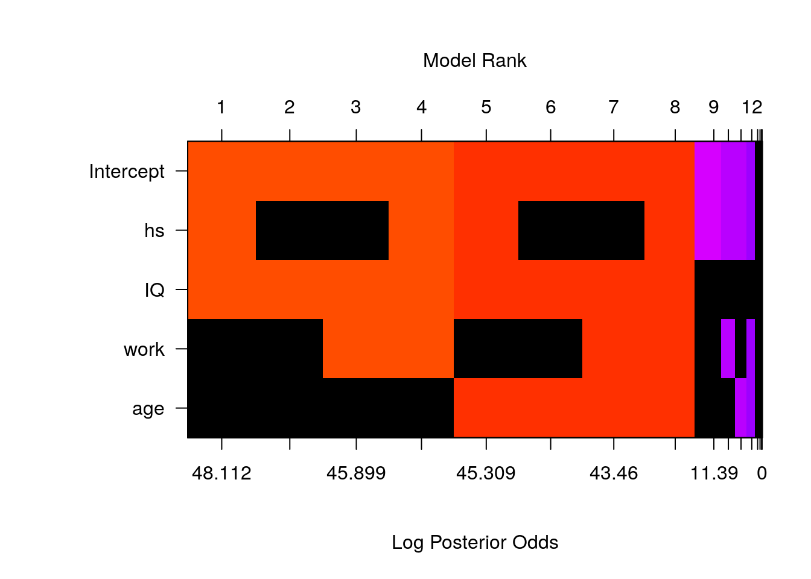
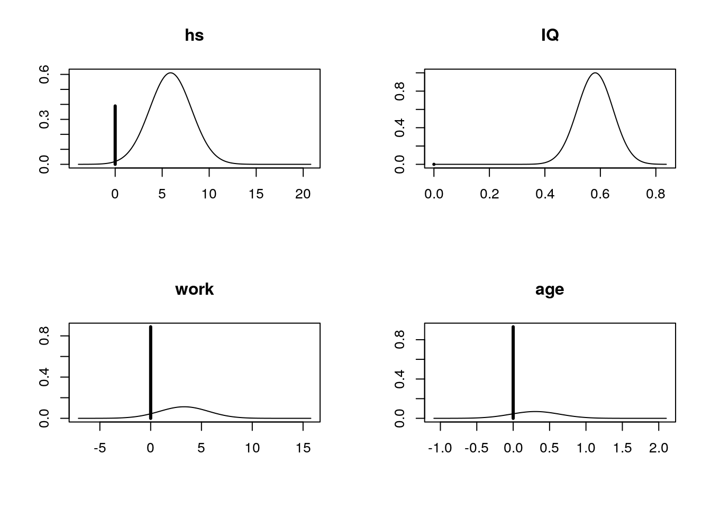

Chapter 7 Bayesian Model Choice
In Section 6.3 of Chapter 6, we provided a Bayesian inference analysis for kid’s cognitive scores using multiple linear regression. We found that several credible intervals of the coefficients contain zero, suggesting that we could potentially simplify the model. In this chapter, we will discuss model selection, model uncertainty, and model averaging. Bayesian model selection is to pick variables for multiple linear regression based on Bayesian information criterion, or BIC. Later, we will also discuss other model selection methods, such as using Bayes factors.
7.1 Bayesian Information Criterion (BIC)
In inferential statistics, we compare model selections using \(p\)-values or adjusted \(R^2\). Here we will take the Bayesian propectives. We are going to discuss the Bayesian model selections using the Bayesian information criterion, or BIC. BIC is one of the Bayesian criteria used for Bayesian model selection, and tends to be one of the most popular criteria.
7.1.1 Definition of BIC
The Bayesian information criterion, BIC, is defined to be
\[\begin{equation} \text{BIC} = -2\ln(\widehat{\text{likelihood}}) + (p+1)\ln(n). \tag{7.1} \end{equation}\]Here \(n\) is the number of observations in the model, and \(p\) is the number of predictors. That is, \(p+1\) is the number of total parameters (also the total number of coefficients, including the intercept) in the model. Recall that in the Bayesian simple linear regression (Section 6.1), we mentioned the likelihood of the model \(y_i=\alpha + \beta x_i+\epsilon_i\) is the probability (or probability distribution) for the observed data \(y_i,\ i = 1,\cdots, n\) occur under the given parameters \(\alpha,\ \beta,\ \sigma^2\) \[ \text{likelihood} = p(y_i~|~\alpha,\ \beta, \ \sigma^2) = \mathcal{L}(\alpha,\ \beta,\ \sigma^2), \] where \(\sigma^2\) is the variance of the assumed Normal distribution of the error term \(\epsilon_i\). In general, under any model \(M\), we can write the likelihood of this model as the function of parameter \(\boldsymbol{\theta}\) (\(\boldsymbol{\theta}\) may be a vector of several parameters) and the model \(M\) \[ \text{likelihood} = p(\text{data}~|~\boldsymbol{\theta}, M) = \mathcal{L}(\boldsymbol{\theta}, M). \] If the likelihood function \(\mathcal{L}(\boldsymbol{\theta}, M)\) is nice enough (say it has local maximum), the maximized value of the likelihood, \(\widehat{\text{likelihood}}\), can be achieved by some special value of the parameter \(\boldsymbol{\theta}\), denoted as \(\hat{\boldsymbol{\theta}}\) \[ \widehat{\text{likelihood}} = p(\text{data}~|~\hat{\boldsymbol{\theta}}, M) = \mathcal{L}(\hat{\boldsymbol{\theta}}, M).\]
This is the likelihood that defines BIC.
When the sample size \(n\) is large enough and the data distribution belongs to the exponential family such as the Normal distribution, BIC can be approximated by -2 times likelihood that data are produced under model \(M\):
\[\begin{equation} \text{BIC}\approx -2\ln(p(\text{data}~|~M)) = -2\ln\left(\int p(\text{data}~|~\boldsymbol{\theta}, M)p(\boldsymbol{\theta}~|~M)\, d\boldsymbol{\theta}\right),\qquad \quad \text{when $n$ is large.} \tag{7.2} \end{equation}\]Here \(p(\boldsymbol{\theta}~|~M)\) is the prior distribution of the parameter \(\boldsymbol{\theta}\). We will not go into detail why the approximation holds and how we perform the integration in this book. However, we wanted to remind readers that, since BIC can be approximated by the prior distribution of the parameter \(\boldsymbol{\theta}\), we will see later how we utilize BIC to approximate the model likelihood under the reference prior.5
One more observation of formula (7.2) is that it involves the marginal likelihood of data under model \(M\), \(p(\text{data}~|~M)\). We have seen this quantity when we introduced Bayes factor between two hypotheses or models \[ {\textit{BF}}[M_1:M_2] = \frac{p(\text{data}~|~M_1)}{p(\text{data}~|~M_2)}. \] This also provides connection between BIC and Bayes factor, which we will leverage later.
Similar to AIC, the Akaike information criterion, the model with the smallest BIC is preferrable. Formula (7.1) can be re-expressed using the model \(R^2\), which is easier to calculate \[\begin{equation} \text{BIC} = n\ln(1-R^2)+(p+1)\ln(n)+\text{constant}, \tag{7.3} \end{equation}\] where the last term constant only depends on the sample size \(n\), and the observed data \(y_1,\cdots, y_n\). Since this constant does not depend on the choice of model, i.e., the choice of variables, ignoring this constant will not affect the comparison of BICs between models. Therefore, we usually define BIC to be \[\begin{equation*} \text{BIC} = n\ln(1-R^2) + (p+1)\ln(n). \end{equation*}\]From this expression, we see that adding more predictors, that is, increasing \(p\), will result in larger \(R^2\), which leads to a smaller \(\ln(1-R^2)\) in the first term of BIC. While larger \(R^2\) means better goodness of fit of the data, too many predictors may result in overfitting the data. Therefore, the second term \((p+1)\ln(n)\) is added in the BIC expression to penalize models with too many predictors. When \(p\) increases, the second term increases as well. This provides a trade-off between the goodness of fit given by the first term and the model complexity represented by the second term.
7.1.2 Backward Elimination with BIC
We will use the kid’s cognitive score data set cognitive as an example. We first read in the data set from Gelman’s website and transform the data types of the two variables mom_work and mom_hs, like what we did in Section 6.3.
# Load the library in order to read in data from website
library(foreign)
# Read in cognitive score data set and process data tranformations
cognitive = read.dta("http://www.stat.columbia.edu/~gelman/arm/examples/child.iq/kidiq.dta")
cognitive$mom_work = as.numeric(cognitive$mom_work > 1)
cognitive$mom_hs = as.numeric(cognitive$mom_hs > 0)
colnames(cognitive) = c("kid_score", "hs","IQ", "work", "age")We start with the full model, with all possible predictors: hs, IQ, work, and age. We will drop one variable at a time and record all BICs. Then we will choose the model with the smallest BIC. We will repeat this process until none of the models yields a decrease in BIC. We use the step function in R to perform the BIC model selection. Notice the default value of the k argument in the step function is k=2, which is for the AIC score. For BIC, k should be log(n) correspondingly.
# Compute the total number of observations
n = nrow(cognitive)
# Full model using all predictors
cog.lm = lm(kid_score ~ ., data=cognitive)
# Perform BIC elimination from full model
# k = log(n): penalty for BIC rather than AIC
cog.step = step(cog.lm, k=log(n)) ## Start: AIC=2541.07
## kid_score ~ hs + IQ + work + age
##
## Df Sum of Sq RSS AIC
## - age 1 143.0 141365 2535.4
## - work 1 383.5 141605 2536.2
## - hs 1 1595.1 142817 2539.9
## <none> 141222 2541.1
## - IQ 1 28219.9 169441 2614.1
##
## Step: AIC=2535.44
## kid_score ~ hs + IQ + work
##
## Df Sum of Sq RSS AIC
## - work 1 392.5 141757 2530.6
## - hs 1 1845.7 143210 2535.0
## <none> 141365 2535.4
## - IQ 1 28381.9 169747 2608.8
##
## Step: AIC=2530.57
## kid_score ~ hs + IQ
##
## Df Sum of Sq RSS AIC
## <none> 141757 2530.6
## - hs 1 2380.2 144137 2531.7
## - IQ 1 28504.1 170261 2604.0In the summary chart, the AIC should be interpreted as BIC, since we have chosen to use the BIC expression where \(k=\ln(n)\).
From the full model, we predict the kid’s cognitive score from mother’s high school status, mother’s IQ score, mother’s work status and mother’s age. The BIC for the full model is 2541.1.
At the first step, we try to remove each variable from the full model to record the resulting new BIC. From the summary statistics, we see that removing variable age results in the smallest BIC. But if we try to drop the IQ variable, this will increase the BIC, which implies that IQ would be a really important predictor of kid_score. Comparing all the results, we drop the age variable at the first step. After dropping age, the new BIC is 2535.4.
At the next step, we see that dropping work variable will result in the lowest BIC, which is 2530.6. Now the model has become \[ \text{score} \sim \text{hs} + \text{IQ} \]
Finally, when we try dropping either hs or IQ, it will result in higher BIC than 2530.6. This suggests that we have reached the best model. This model predicts kid’s cognitive score using mother’s high school status and mother’s IQ score.
However, using the adjusted \(R^2\), the best model would be the one including not only hs and IQ variables, but also mother’s work status, work. In general, using BIC leads to fewer variables for the best model compared to using adjusted \(R^2\) or AIC.
We can also use the BAS package to find the best BIC model without taking the stepwise backward process.
# Import library
library(BAS)
# Use `bas.lm` to run regression model
cog.BIC = bas.lm(kid_score ~ ., data = cognitive,
prior = "BIC", modelprior = uniform())
cog.BIC##
## Call:
## bas.lm(formula = kid_score ~ ., data = cognitive, prior = "BIC",
## modelprior = uniform())
##
##
## Marginal Posterior Inclusion Probabilities:
## Intercept hs IQ work age
## 1.00000 0.61064 1.00000 0.11210 0.06898Here we set the modelprior argument as uniform() to assign equal prior probability for each possible model.
The logmarg information inside the cog.BIC summary list records the log of marginal likelihood of each model after seeing the data \(\ln(p(\text{data}~|~M))\). Recall that this is approximately proportional to negative BIC when the sample size \(n\) is large \[ \text{BIC}\approx -2 \ln(p(\text{data}~|~M)).\]
We can use this information to retrieve the model with the largest log of marginal likelihood, which corresponds to the model with the smallest BIC.
# Find the index of the model with the largest logmarg
best = which.max(cog.BIC$logmarg)
# Retrieve the index of variables in the best model, with 0 as the index of the intercept
bestmodel = cog.BIC$which[[best]]
bestmodel## [1] 0 1 2# Create an indicator vector indicating which variables are used in the best model
# First, create a 0 vector with the same dimension of the number of variables in the full model
bestgamma = rep(0, cog.BIC$n.vars)
# Change the indicator to 1 where variables are used
bestgamma[bestmodel + 1] = 1
bestgamma## [1] 1 1 1 0 0From the indicator vector bestgamma we see that only the intercept (indexed as 0), mother’s high school status variable hs (indexed as 1), and mother’s IQ score IQ (indexed as 2) are used in the best model, with 1’s in the corresponding slots of the 5-dimensional vector \((1, 1, 1, 0, 0)\).
7.1.3 Coefficient Estimates Under Reference Prior for Best BIC Model
The best BIC model \(M\) can be set up as follows and we have adopted the “centered” model convention for convenient analyses \[ y_{\text{score},i} = \beta_0 + \beta_1(x_{\text{hs},i} - \bar{x}_{\text{hs}, i})+\beta_2(x_{\text{IQ},i}-\bar{x}_{\text{IQ}})+\epsilon_i,\qquad \quad i = 1,\cdots, n \]
We would like to get the posterior distributions of the coefficients \(\beta_0\), \(\beta_1\), and \(\beta_2\) under this model. Recall that the reference prior imposes a uniformly flat prior distribution on coefficients \(p(\beta_0, \beta_1, \beta_2~|~M)\propto 1\) and that \(p(\sigma^2~|~M) \propto 1/\sigma^2\), so together the joint prior distribution \(p(\beta_0, \beta_1, \beta_2, \sigma^2~|~M)\) is proportional to \(1/\sigma^2\). When the sample size \(n\) is large, any proper prior distribution \(p(\beta_0, \beta_1, \beta_2, \sigma^2~|~M)\) is getting flatter and flatter, which can be approximated by the reference prior. At the same time, the log of marginal likelihood \(\ln(p(\text{data}~|~M))\) can be approximated by the BIC. Therefore, we use prior = "BIC" in the bas.lm function when we use the BIC as an approximation of the log of marginal likelihood under the reference prior. The posterior mean of \(\beta_0\) in the result is the sample mean of the kids’ cognitive scores, or \(\bar{Y}_{\text{score}}\), since we have centered the model.
# Fit the best BIC model by imposing which variables to be used using the indicators
cog.bestBIC = bas.lm(kid_score ~ ., data = cognitive,
prior = "BIC", n.models = 1, # We only fit 1 model
bestmodel = bestgamma, # We use bestgamma to indicate variables
modelprior = uniform())
# Retrieve coefficients information
cog.coef = coef(cog.bestBIC)
# Retrieve bounds of credible intervals
out = confint(cog.coef)[, 1:2]
# Combine results and construct summary table
coef.BIC = cbind(cog.coef$postmean, cog.coef$postsd, out)
names = c("post mean", "post sd", colnames(out))
colnames(coef.BIC) = names
coef.BIC## post mean post sd 2.5% 97.5%
## Intercept 86.797235 0.87054033 85.0862025 88.5082675
## hs 5.950117 2.21181218 1.6028370 10.2973969
## IQ 0.563906 0.06057408 0.4448487 0.6829634
## work 0.000000 0.00000000 0.0000000 0.0000000
## age 0.000000 0.00000000 0.0000000 0.0000000Comparing the coefficients in the best model with the ones in the full model (which can be found in Section 6.3), we see that the 95% credible interval for IQ variable is the same. However, the credible interval for high school status hs has shifted slightly to the right, and it is also slighly narrower, meaning a smaller posterior standard deviation. All credible intervals of coefficients exclude 0, suggesting that we have found a parsimonious model.6
7.1.4 Other Criteria
BIC is one of the criteria based on penalized likelihoods. Other examples such as AIC (Akaike information criterion) or adjusted \(R^2\), employ the form of \[ -2\ln(\widehat{\text{likelihood}}) + (p+1)\times\text{some constant},\] where \(p\) is the number of predictor variables and “some constant” is a constant value depending on different criteria. BIC tends to select parsimonious models (with fewer predictor variables) while AIC and adjusted \(R^2\) may include variables that are not statistically significant, but may do better for predictions.
Other Bayesian model selection decisions may be based on selecting models with the highest posterior probability. If predictions are important, we can use decision theory to help pick the model with the smallest expected prediction error. In addiciton to goodness of fit and parsimony, loss functions that include costs associated with collecting variables for predictive models may be of important consideration.
7.2 Bayesian Model Uncertainty
In the last section, we discussed how to use Bayesian Information Criterion (BIC) to pick the best model, and we demonstrated the method on the kid’s cognitive score data set. However, we may often have several models with similar BIC. If we only pick the one with the lowest BIC, we may ignore the presence of other models that are equally good or can provide useful information. The credible intervals of coefficients may be narrower since the uncertainty is being ignored when we consider only one model. Narrower intervals are not always better if they miss the true values of the parameters. To account for the uncertainty, getting the posterior probability of all possible models is necessary. In this section, we will talk about how to convert BIC into Bayes factor to find the posterior probability of all possible models. We will again use the BAS package in R to achieve this goal.
7.2.1 Model Uncertainty
When forecasting the path of a hurricane, having an accurate prediction and measurement of uncertainty is important for early warning. In this case, we would consider the probability of several potential paths that the hurricane may make landfall. Similar to hurricane forecasting, we would also like to obtain the posterior probability of all possible models for uncertainty measurement.
To represent model uncertainty, we need to construct a probability distribution over all possible models where the each probability provides measure of how likely the model is to happen.
Suppose we have a multiple linear regression \[ y_i = \beta_0+\beta_1(x_{1,i} - \bar{x}_1)+\beta_2(x_{2,i} - \bar{x}_2)+\cdots+\beta_p(x_{p,i}-\bar{x}_p)+\epsilon_i, \quad 1\leq i \leq n,\] with \(p\) predictor variables \(x_1,\cdots, x_p\). There are in total \(2^p\) different models, corresponding to \(2^p\) combinations of variable selections. there are 2 possibilities for each variable: either getting selected or not, and we have in total \(p\) variables. We denote each model as \(M_m,\ m=1,\cdots,2^p\). To obtian the posterior probability of each model \(p(M_m~|~\text{data})\), Bayes’ rule tells that that we need to assign the prior probability \(p(M_m)\) to each model, and to then obtain the marginal likelihood of each model \(p(\text{data}~|~M_m)\). By Bayes’ rule, we update the posterior probability of each model \(M_m\) after seeing the date, via marginal likelihood of model \(M_m\):
\[\begin{equation} p(M_m~|~\text{data}) = \frac{\text{marginal likelihood of }M_m\times p(M_m)}{\sum_{j=1}^{2^p}\text{marginal likelihood of }M_j\times p(M_j)} = \frac{p(\text{data}~|~M_m)p(M_m)}{\sum_{j=1}^{2^p}p(\text{data}~|~M_m)p(M_m)}. \tag{7.4} \end{equation}\]The marginal likelihood \(p(\text{data}~|~M_m)\) of each model \(M_m\) serves to reweight the prior probability \(p(M_m)\), so that models with higher likelihoods have larger weights, and models with lower likelihoods receive smaller weights. We renormalize this weighted prior probability by dividing it by the sum \(\displaystyle \sum_{j=1}^{2^p}p(\text{data}~|~M_j)p(M_j)\) to get the posterior probability of each model.
Recall that the prior odd between two models \(M_1\) and \(M_2\) is defined to be
\[ {\textit{O}}[M_1:M_2] = \frac{p(M_1)}{p(M_2)}, \] and the Bayes factor is defined to be the ratio of the likelihoods of two models \[ {\textit{BF}}[M_1:M_2] = \frac{p(\text{data}~|~M_1)}{p(\text{data}~|~M_2)}. \]
Suppose we have chosen a base model \(M_b\), we may divide both the numerator and the denominator of the formula (7.4) by \(p(\text{data}~|~M_b)\times p(M_b)\). This gives us a new formula to calculate the posterior probability of model \(M_m\) based on the prior odd and the Bayes factor. In this new formula, we can see that the evidence from the data in the Bayes factor \({\textit{BF}}[M_j:M_b],\ j=1,\cdots, 2^p\) serve to upweight or downweight the prior odd \({\textit{O}}[M_j:M_b],\ j=1,\cdots,2^p\).
\[ \begin{aligned} p(M_m~|~\text{data}) = & \frac{p(\text{data}~|~M_m)\times p(M_m)/(p(\text{data}~|~M_b)\times p(M_b))}{\sum_{j=1}^{2^p}(p(\text{data}~|~M_j)\times p(M_j))/(p(\text{data}~|~M_b)\times p(M_b))} \\ & \\ = & \frac{[p(\text{data}~|~M_m)/p(\text{data}~|~M_b)]\times[p(M_m)/p(M_b)]}{\sum_{j=1}^{2^p}[p(\text{data}~|~M_j)/p(\text{data}~|~M_b)]\times[p(M_j)/p(M_b)]}\\ & \\ = & \frac{{\textit{BF}}[M_m:M_b]\times {\textit{O}}[M_m:M_b]}{\sum_{j=1}^{2^p}{\textit{BF}}[M_j:M_b]\times {\textit{O}}[M_j:M_b]}. \end{aligned} \] Any model can be used as the base model \(M_b\). It could be the model with the highest posterior probability, or the null model \(M_0\) with just the intercept \(y_i = \beta_0+\epsilon_i\).
Using BIC, we can approximate the Bayes factor between two models by their OLS \(R\)-squared’s and the numbers of predictors used in the models, when we have large sample of data. This provides a much easier way to approximate the posterior probability of models since obtaining \(R^2\) can be done by the usual OLS linear regression. Recall that in Section 7.1, we provided the fact that BIC of any model \(M_m\) (denoted as \(\text{BIC}_m\)) is an asymptotic approximation of the log of marginal likelihood of \(M_m\) when the sample size \(n\) is large (Equation (7.2)) \[ \text{BIC}_m \approx -2 \ln(\text{marginal likelihood}) = -2\ln(p(\text{data}~|~M_m)). \]
Using this fact, we can approximate Bayes factor between two models by their BICs \[ {\textit{BF}}[M_1:M_2] = \frac{p(\text{data}~|~M_1)}{p(\text{data}~|~M_2)} \approx \frac{\exp(-\text{BIC}_1/2)}{\exp(-\text{BIC}_2/2)}=\exp\left(-\frac{1}{2}(\text{BIC}_1-\text{BIC}_2)\right).\]
We also know that BIC can be calculated by the OLS \(R^2\) and the number of predictors \(p\) from Equation (7.3) in Section 7.1 \[ \text{BIC} = n\ln(1-R^2) + (p+1)\ln(n) + \text{constant}. \] (We usually ignore the constant in the last term since it does not affect the difference betweeen two BICs.)
Using this formula, we can approximate Bayes factor between model \(M_1\) and \(M_2\) by their corresponding \(R\)-squared’s and the numbers of predictors \[\begin{equation} \BF[M_1:M_2]\approx \left(\frac{1-R_1^2}{1-R_2^2}\right)^{\frac{n}{2}}\times n^{\frac{p_1-p_2}{2}}. \tag{7.5} \end{equation}\]As for the null model \(M_0:\ y_i = \beta_0+\epsilon_i\), \(R_0^2 = 0\) and \(p_0=0\). Equation (7.5) can be further simplified as \[ {\textit{BF}}[M_m:M_0] = (1-R_m^2)^{\frac{n}{2}}\times n^{\frac{p_m}{2}}. \]
7.2.2 Calculating Posterior Probability in R
Back to the kid’s cognitive score example, we will see how the summary of results using bas.lm tells us about the posterior probability of all possible models.
Suppose we have already loaded the data and pre-processed the columns mom_work and mom_hs using as.numeric function, as what we did in the last section. To represent model certainty, we construct the probability distribution overall possible 16 (=\(2^4\)) models where each probability \(p(M_m)\) provides a measure of how likely the model \(M_m\) is. Inside the bas.lm function, we first specify the full model, which in this case is the kid_score, being regressed by all predictors: mother’s high school status hs, mother’s IQ IQ, mother’s work status work and mother’s age age. We take the data = cognitive in the next argument. For the prior distribution of the coefficients for calculating marginal likelihoods, we use prior = "BIC" to approximate the marginal likelihood \(p(\text{data}~|~M_m)\). We then use modelprior = uniform() in the argument to assign equal prior probability \(p(M_m),\ m=1,\cdots, 16\) to all 16 models. That is, \(\displaystyle p(M_m) = \frac{1}{16}\).
# Import libary
library(BAS)
# Use `bas.lm` for regression
cog_bas = bas.lm(kid_score ~ hs + IQ + work + age,
data = cognitive, prior = "BIC",
modelprior = uniform())cog_bas is a bas object. The usual print, summary, plot, coef, fitted, predict functions are available and can be used on bas objects similar to lm objects created by the usual lm function. From calling
names(cog_bas)## [1] "probne0" "which" "logmarg" "postprobs"
## [5] "priorprobs" "sampleprobs" "mse" "mle"
## [9] "mle.se" "shrinkage" "size" "R2"
## [13] "rank" "rank_deficient" "n.models" "namesx"
## [17] "n" "prior" "modelprior" "alpha"
## [21] "probne0.RN" "postprobs.RN" "include.always" "df"
## [25] "n.vars" "Y" "X" "mean.x"
## [29] "call" "xlevels" "terms" "model"one can see the outputs and analyses that we can extract from a bas object.
The bas object takes the summary method
round(summary(cog_bas), 3)## P(B != 0 | Y) model 1 model 2 model 3 model 4 model 5
## Intercept 1.000 1.000 1.000 1.000 1.000 1.000
## hs 0.611 1.000 0.000 0.000 1.000 1.000
## IQ 1.000 1.000 1.000 1.000 1.000 1.000
## work 0.112 0.000 0.000 1.000 1.000 0.000
## age 0.069 0.000 0.000 0.000 0.000 1.000
## BF NA 1.000 0.562 0.109 0.088 0.061
## PostProbs NA 0.529 0.297 0.058 0.046 0.032
## R2 NA 0.214 0.201 0.206 0.216 0.215
## dim NA 3.000 2.000 3.000 4.000 4.000
## logmarg NA -2583.135 -2583.712 -2585.349 -2585.570 -2585.939The summary table shows us the following information of the top 5 models
| Item | Description |
|---|---|
P(B!=0 | Y) |
Posterior inclusion probability (pip) of each coefficient under data \(Y\) |
0 or 1 in the column |
indicator of whether the variable is included in the model |
BF |
Bayes factor \({\textit{BF}}[M_m:M_b]\), where \(M_b\) is the model with highest posterior probability |
PostProbs |
Posterior probability of each model |
R2 |
\(R\)-squared in the ordinary least square (OLS) regression |
dim |
Number of variables (including the intercept) included in the model |
logmarg |
Log of marginal likelihood of the model, which is approximately \(-\displaystyle\frac{1}{2}\text{BIC}\) |
All top 5 models suggest to exclude age variable and include IQ variable. The first model includes intercept \(\beta_0\) and only hs and IQ, with a posterior probability of about 0. The model with the 2nd highest posterior probability, which includes only the intercept and the variable IQ, has posterior probability of about 0. These two models compose of total posterior probability of about 0, leaving only 1 posterior probability to the remaining 14 models.
Using the print method, we obtain the marginal posterior inclusion probability (pip) \(p(\beta_j\neq 0)\) of each variable \(x_j\).
print(cog_bas)##
## Call:
## bas.lm(formula = kid_score ~ hs + IQ + work + age, data = cognitive,
## prior = "BIC", modelprior = uniform())
##
##
## Marginal Posterior Inclusion Probabilities:
## Intercept hs IQ work age
## 1.00000 0.61064 1.00000 0.11210 0.068987.3 Bayesian Model Averaging
In the last section, we explored model uncertainty using posterior probability of models based on BIC. In this section, we will continue the kid’s cognitive score example to see how to obtain an Bayesian model averaging results using model posterior probability.
7.3.1 Visualizing Model Uncertainty
Recall that in the last section, we used the bas.lm function in the BAS package to obtain posterior probability of all models in the kid’s cognitive score example. \[ \text{score} ~\sim~ \text{hq} + \text{IQ} + \text{work} + \text{age} \]
We have found the posterior distribution under model uncertainty using all possible combinations of the predictors, the mother’s high school status hs, mother’s IQ score IQ, whether the mother worked during the first three years of the kid’s life work, and mother’s age age. With 4 predictors, there are \(2^4 = 16\) possible models. In general, for linear regression model with \(p\) predictor variables \[ y_i = \beta_0+\beta_1(x_{p,i}-\bar{x}) + \cdots + \beta_p(x_{p,i}-\bar{x}_p)+\epsilon_i,\qquad i = 1, \cdots,n,\] there will be in total \(2^p\) possible models.
We can also visualize model uncertainty from the bas object cog_bas that we generated in the previous section.
In R, the image function may be used to create an image of the model space that looks like a crossword puzzle.
image(cog_bas, rotate = F)
To obtain a clearer view for model comparison, we did not rotate the image. Here, the predictors, including the intercept, are on the \(y\)-axis, while the \(x\)-axis corresponds to each different model. Each vertical column corresponds to one model. For variables that are not included in one model, they will be represented by black blocks. For example, model 1 includes the intercept, hs, and IQ, but not work or age. These models are ordered according to the log of posterior odd over the null model (model with only the intercept). The log of posterior odd is calculated as \[\ln({\textit{PO}}[M_m:M_0]) = \ln ({\textit{BF}}[M_m:M_0]\times {\textit{O}}[M_m:M_0]).\] Since we assing same prior probability for all models, \(\text{O}[M_m:M_0] = 1\) and therefore, the log of posterior odd is the same as the log of the Bayes factor. The color of each column is proportional to the log of the posterior probability. Models with same colors have similar posterior probabilities. This allows us to view models that are clustered together, when the difference within a cluster is not worth a bare mention.
If we view the image by rows, we can see whether one variable is included in a particular model. For each variable, there are only 8 models in which it will appear. For example, we see that IQ appears in all the top 8 models with larger posterior probabilities, but not the last 8 models. The image function shows up to 20 models by default.
7.3.2 Bayesian Model Averaging Using Posterior Probability
Once we have obtained the posterior probability of each model, we can make inference and obtain weighted averages of quantities of interest using these probabilities as weights. Models with higher posterior probabilities receive higher weights, while models with lower posterior probabilities receive lower weights. This gives the name “Bayesian Model Averaging” (BMA). For example, the probability of the next prediction \(\hat{Y}^*\) after seeing the data can be calculated as a “weighted average” of the prediction of next observation \(\hat{Y}^*_j\) under each model \(M_j\), with the posterior probability of \(M_j\) being the “weight” \[ \hat{Y}^* = \sum_{j=1}^{2^p}\hat{Y}^*_j\ p(M_j~|~\text{data}). \]
In general, we can use this weighted average formula to obtain the value of a quantity of interest \(\Delta\). \(\Delta\) can \(Y^*\), the next observation; \(\beta_j\), the coefficient of variable \(X_j\); \(p(\beta_j~|~\text{data})\), the posterior probability of \(\beta_j\) after seeing the data. The posterior probability of \(\Delta\) seeing the data can be calculated using the formula
\[\begin{equation} p(\Delta~|~\text{data}) = \sum_{j=1}^{2^p}p(\Delta~|~ M_j,\ \text{data})p(M_j~|~\text{data}). \tag{7.6} \end{equation}\]This formula is similar to the one we have seen in Week 2 lecture Predictive Inference when we used posterior probability of two different success rates of getting the head in a coin flip to calculate the predictive probability of getting heads in future coin flips. Recall in that example, we have two competing hypothese, that the success rate (also known as the probability) of getting heads in coin flips, are \[ H_1: p = 0.7,\qquad \text{vs}\qquad H_2: p=0.4.\]
We calcualted the posterior probability of each success rate. They are \[ \begin{aligned} P(p=0.7~|~\text{data})= & P(H_1~|~\text{data})= p^* = 0.754,\\ P(p=0.4~|~\text{data}) = & P(H_2~|~\text{data}) = 1-p^* = 0.246. \end{aligned} \]
We can use these two probabilities to calculate the posterior probability of getting head in the next coin flip \[\begin{equation} P(\text{head}~|~\text{data}) = P(\text{head}~|~H_1,\text{data})P(H_1~|~\text{data}) + P(\text{head}~|~H_2,\text{data})P(H_2~|~\text{data}). \tag{7.7} \end{equation}\]We can see that equation (7.7) is just a special case of the general equation (7.6) when the posterior probability of hypotheses \(P(H_1~|~\text{data})\) and \(P(H_2~|~\text{data})\) serve as weights.
Moreover, the expected value of \(\Delta\) can also be obtained by a weighted average formula of expected values on each model, using conditional probability
\[ E[\Delta~|~\text{data}] = \sum_{j=1}^{2^p}E[\Delta~|~M_j,\ \text{data}]p(M_j~|~\text{data}).\]
Since the weights \(p(M_j~|~\text{data})\) are probabilities and have to sum to one, if the best model had posterior probability one, all of the weights would be placed on that single best model. In this case, using BMA would be equivalent to selecting the best model with the highest posterior probability. However, if there are several models that receive substantial probability, they would all be included in the inference and account for the uncertainty about the true model.
7.3.3 Coefficient Summary under BMA
We can obtain the coefficients by the coef function.
cog_coef = coef(cog_bas)
cog_coef##
## Marginal Posterior Summaries of Coefficients:
##
## Using BMA
##
## Based on the top 16 models
## post mean post SD post p(B != 0)
## Intercept 86.79724 0.87287 1.00000
## hs 3.59494 3.35643 0.61064
## IQ 0.58101 0.06363 1.00000
## work 0.36696 1.30939 0.11210
## age 0.02089 0.11738 0.06898Under Bayesian model averaging, the table above provides the posterior mean, the posterior standard deviation, and the posterior inclusion probability (pip) of each coefficient. The posterior mean of the coefficient \(\hat{\beta}_j\) under BMA would be used for future predictions. The posterior standard deviation \(\text{se}_{\beta_j}\) provides measure of variability of the coefficient \(\beta_j\). An approximate range of plausible values for each of the coefficients may be obtained via the empirical rule \[ (\hat{\beta}_j-\text{critical value}\times \text{se}_{\beta_j},\ \hat{\beta}_j+\text{critical value}\times \text{se}_{\beta_j}).\]
However, this only applies if the posterior distribution is symmetric or unimodal.
The posterior mean of the intercept, \(\hat{\beta}_0\), is obtained after we have centered the variables. We have discussed the effect of centering the model. One of the advantage of doing so is that the intercept \(\beta_0\) represents the sample mean of the observed response \(Y\). Under the reference prior, the point estimate of the intercept \(\hat{\beta}_0\) is exactly the mean \(\bar{Y}\).
We see that the posterior mean, standard deviation and inclusion probability are slightly different than the ones we obtained in Section 6.3 when we forced the model to include all variables. Under BMA, IQ has posterior inclusion probability 1, suggesting that it is very likely that IQ should be included in the model. hs also has a high posterior inclusion probability of about 0.61. However, the posterior inclusion probability of mother’s work status work and mother’s age age are relatively small compared to IQ and hs.
We can also plot the posterior distributions of these coefficients to take a closer look at the distributions
par(mfrow = c(2, 2))
plot(cog_coef, subset = c(2:5))
This plot agrees with the summary table we obtained above, which shows that the posterior probability distributions of work and age have a very large point mass at 0, while the distribution of hs has a relatively small mass at 0. There is a slighly little tip at 0 for the variable IQ, indicating that the posterior inclusion probability of IQ is not exactly 1. However, since the probability mass for IQ to be 0 is so small, that we are almost certain that IQ should be included under Bayesian model averaging.
7.4 Summary
In this chapter, we have discussed Bayesian model uncertainty and Bayesian model averaging. We have shown how Bayesian model averaging can be used to address model uncertainty using the ensemble of models for inference, rather than selecting a single model. We applied this to the kid’s cognitive score data set using BAS package in R. Here we illustrated the concepts using BIC and reference prior on the coefficients. In the next chapter, we will explore alternative priors for coefficients, taking into account the sensitivity of model selection to prior choices. We will also explore Markov Chain Monte Carlo algorithm for model sampling when the model space is too large for theoretical calculations.
Recall that the reference prior is the limiting case of the multivariate Normal-Gamma distribution.↩
A parsimonious model is a model that accomplishes a desired level of explanation or prediction with as few predictor variables as possible. More discussion of parsimonious models can be found in Course 3 Linear Regression and Modeling.↩